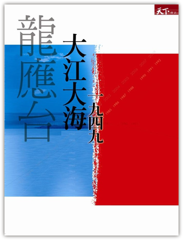

Monday, November 02nd, 2009 5:55am


Monday, October 12th, 2009 9:38am

一、
当我走在柏林街头的时候，满街的冷战图腾令我觉得恍惚不已。在勃兰登堡门的两侧是西德的胜利柱和东德的柏林电视塔遥想对峙，这一对峙在 1989 年以一方在政治上、经济上、道义上和意识形态上的胜利和另一方的失败而告终。我穿行于其间，一会儿站在胜利者的土地上，一会儿站在失败者的土地上。更多的时候，如果不看地图我完全不知道自己脚下的土地属于哪一方。
在我到柏林的同一天，勃兰登堡广场正在举行一个庆祝柏林墙倒塌二十周年的庆典。广场上人山人海，拥挤的几乎一步也走不动。我看着周遭的德国人，忽然很想知道，这里面有多少是西德人，有多少是东德人？我知道，对今天的他们来说，这一身份界定已然失去了意义，可是在此前的若干年里，这意味着截然不同的命运。我身边并肩站立的两个人，很可能一个曾经是东德共产党的基层党务干部，而另一个是西柏林私营企业的小职员。他们真的已经坦然接纳彼此的过去了么？我不知道。
在柏林我看到的所有的意识形态标记里，柏林墙和它的倒塌都是一桩斩钉截铁的黑白色故事，就像那些关于二战的纪念一样。我理解这个故事的叙事背景，我自己的意识形态倾向也促使我赞同这一背景。我固然觉得历史不能简单用正义和邪恶来定义，但是一堵墙在一夜之间被它两侧的人民所同时推倒，这里面当然自有其深刻的道德逻辑在。
只是我还是忍不住想，如果我是一名东德人，确切的说，是一名曾经为了保卫自己的意识形态而奋斗过甚至战斗过的普通的东德人，我在那一夜究竟会是怎样的心情。——奇怪的是，我从来没有自居于西德人设想过。这也许不仅仅是因为我也来自一个社会主义国家，而且因为东德是一个失败者。把自己放到失败者的角度去理解问题，这似乎是我根深蒂固的习惯。
二、
我小时候看《射雕英雄传》，一直有一个如鲠在喉，但是从未真正宣之于口的问题：一个一直生活在父母国家厚爱之下的幸福儿童，一夜之间忽然得知他的亲生父亲是敌国将领。为什么他唯一正确的选择是背叛他的家庭和国家，义无反顾的投向对方的阵营并且同自己的养父敌对？——当然，这是杨康的问题，不是郭靖的。我甚至忍不住暗自替杨康向郭靖虚拟了一个问题：如果你今天忽然发现郭啸天只是你的养父，而你的亲生父亲是金人，你是不是也能一夜之间反正，然后视宋如寇讎？
杨康不曾真的这样问过，我也不曾，因为我知道这是错误的问题，而我是个好孩子。
我一直生活在一个由无数显性的或者隐性的政治正确原则所支撑的环境里，我对它们稔熟于心，游刃有余地遵守，只有很少的时候才会按捺不住自己挑战它的冲动。前不久我写了一篇关于自己的巴黎生活的文章叫做《一个美国人在巴黎》，这标题来源于格什温的同名交响曲，作为一个土生土长的中国人，我当然知道这个题目在每个中国人敏感的民族自尊心上所带来的困扰。在贴出它之前我几次犹豫改掉这个标题，终究还是被自己的倔强占了上风。我凭什么不能给我自己的文章起一个我想要的名字？
幸好这已经是 2009 年，我不会因为这个文章标题招致任何个人生活的动荡，这是多么幸运的事情。
可是我知道有太多的人并不享有同样地幸运。他们只是由于一次偶然的选择——或者甚至不是选择，只是偶然——就被迫走上了截然不同的人生道路，仅仅因为这个人生岔口碰巧同某个被定义为正确或者错误的政治道德枢纽相关联。无论他们此后的命运受到了多少侮辱和损害，都被归并在这统一的正确和错误的框架之下，成为无关痛痒的个案。至于定义正确的人，可能是左派、右派、共产主义者、自由主义者、民族独立分子、民族统一分子，这统统不重要，重要的是他们是胜利的一方，拥有书写正确的历史的权力。
而我只会无可救药地设想，如果我碰巧站在了失败的一方……
三、
龙应台的《大江大海一九四九》，我花了整整一个晚上，用了五个多小时看完。
这本书讲的是失败者的故事。不仅仅是国民党这一个大的失败者，而且是无数更具体而微的普普通通的失败者。1949年迁台的国军士兵和平民，在内战中被战争双方抓壮丁而家破人亡的百姓，辗转逃难到越南又被遣送进难民营的学生团，在台湾日据时期长大效忠天皇而在抗战结束后被审判的台籍「日本兵」，还有这些人的家人们。
他们走上了失败者的一方，通常是再偶然不过的原因。也许是碰巧被来抓壮丁的军队搜到，也许是因为错过了或者赶上了一班火车或者轮船，也许是一次赌气的离家出走，也许只是不幸早出生或者晚出生了几年。重要的是，他们不但此后的人生轨迹被彻底改变，连荣辱也被彻底改变。不论做出多大的牺牲，忍受多么残酷的伤害，付出了多少坚忍卓绝的努力，他们都站在了「历史的对立面」。
我在阅读的过程中，好几次掩卷不忍卒读，不是因为任何高尚和抽象的原因，只是因为我看到他们每个人曾经经历过的最平凡不过的人生瞬间，是怎样残酷地放置在历史的大背景下被检视。一个母亲递给自己出门的独子一张烧饼，她不知道这是六十年的分别的开始；两个山林里的好友结伴出门游玩，看到政工宣传标语怦然心动，他们不知道即将踏上有朝一日兵戎相见的道路；一个女生递给一个男生一卷古文观止，她不知道它会成为几百个中学生在此后若干年的异乡囚牢生涯里仅有的读物。所有这些故事在异日都将会被劈成两半，分别贴上不同的标签，而故事的主人公们对此懵然不知。
从小我就知道，我不能仅仅因为一个悲伤的个人的故事哭泣，而只能在看清楚那张事后贴上去的标签之后再哭泣。我必须知道一个故事中被侮辱与被损害的对象是不是与我同属一个阵营，然后政治正确地流泪或者不流泪。到今天也是如此。
我能不能只是单纯地为这些人哭，而不去问他们在历史坐标系里的位置？
你可能会不喜欢这本书，因为它在某件历史事件上的立场与你不同，因为它对某个人流露出令你不适的评价，因为它过于抒情以至于滥情，它过于冗长而主题又太单一，或者你只是不喜欢龙应台这个人而已。
我喜欢这本书，是因为我知道有人和我一样认为，在历史的风云际会之下，在意识形态标尺之间，在重重政治道德的拷问背后，一个普通人的生死悲欢可以很重要，甚至更重要。
四、
我在读到长春围城那一段的时候，不知道为什么，忽然想起了多年以前看过的一个故事，它来自齐泽克为《意识形态的崇高客体》所做的中文版序：
二战中还有一次不可思议的不期而遇，它与德军的命运联系在一起。这次不期而遇发生在斯大林格勒保卫战之中，那时正值 1942 年 12 月 31 日，是新年除夕。俄国演员和音乐演奏家前来访问这个被重重包围的城市，给军队作慰问性演出。小提琴演奏家 Mikhail Goldstein 去战壕为士兵作独奏。一曲终了，沉寂笼罩在俄军士兵的头上。忽然，从远方喇叭里传来的声音打破了此时此地的沉寂，那声音来自敌佔区。它用结结巴巴的俄语恳求道：「再拉点巴赫的曲子吧，我们不会开枪的。」 Goldstein 拿起了小提琴，开始演奏巴赫那活泼欢快的 Gavotte 舞曲。
《大江大海一九四九》繁体竖排 PDF 版（原版），简体横排 PDF 版（网络自行校订版）。

{kind=link}
{kind=link}
{kind=link}
{kind=link}
{kind=link}
{kind=link}
{kind=link}
{kind=link}
{kind=link}
{kind=link}
{kind=link}
{kind=link}
{kind=link}
{kind=link}